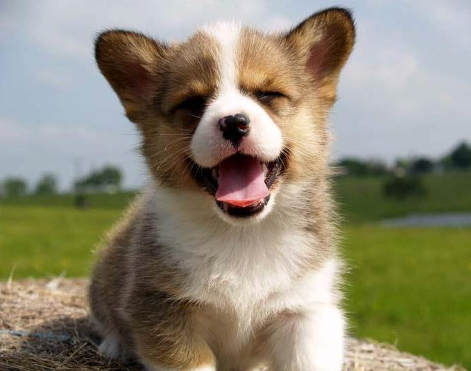
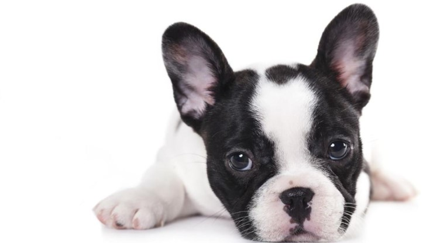
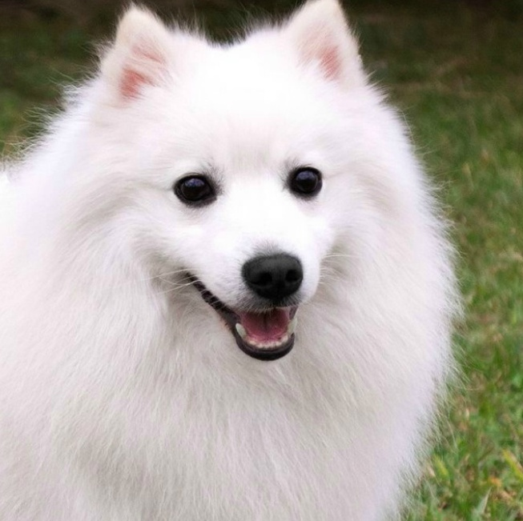

실내에서 기르기 좋은 애완견을 소개해드리겠습니다!
웰시코기처럼 다리가 짧고 허리가 긴 견종들은 특히 디스크에 주의를 해야한다. 또 하나, 웰시코기를 키우기 전 알아야 할 점은 '털 빠짐'이다. 웰시코기는 유난히 털 빠짐이 심한 견종 중 하나이다. 게다가 활동적인 견종이기 때문에 실내에서 키우게 된다면 온 집안에 웰시코기의 털로 범벅이될 수도 있다.
프렌치 불독은 어떤 집에서도 행복하게 지낼 수 있다. 이 견종은 큰 마당이 필요 없기 때문에 도시생활을 하는 사람들에게 적합하다. 조깅 동반자가 될 의도는 없지만 항상 상쾌한 산책을 할 의향은 있다. 프렌치 불독에게 많은 사료를 줄 필요는 없으며, 짧은 털도 깨끗하게 유지하기 쉽다. 얼굴 주름은 규칙적으로 청소 해줘야만 한다. 코를 골지만 어째든 그의 특징 중 하나이다. 주인의 모든 관심을 받고 싶어 하고 집에 있기를 좋아한다.
이중모는 짧은 속털과 긴 겉털의 구조로 추운 환경에 적응할 수 있는 구조입니다. 겹겹이 털이 자라 체온을 보호하여 추위에 강하며, 겉털이 계속 빠지고 새로 자라나며 털에 묻은 이물질을 털어냄으로써 잦은 목욕이 필요 없도록 적응된 털 구조입니다. 그래서인지 냄새가 적은 편입니다.
